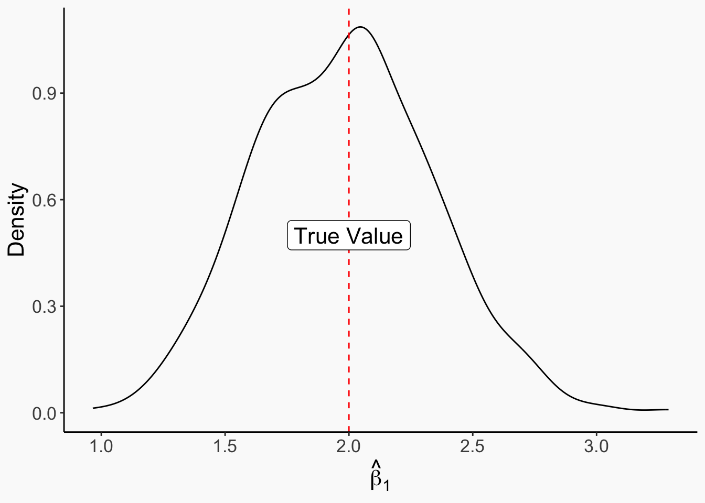
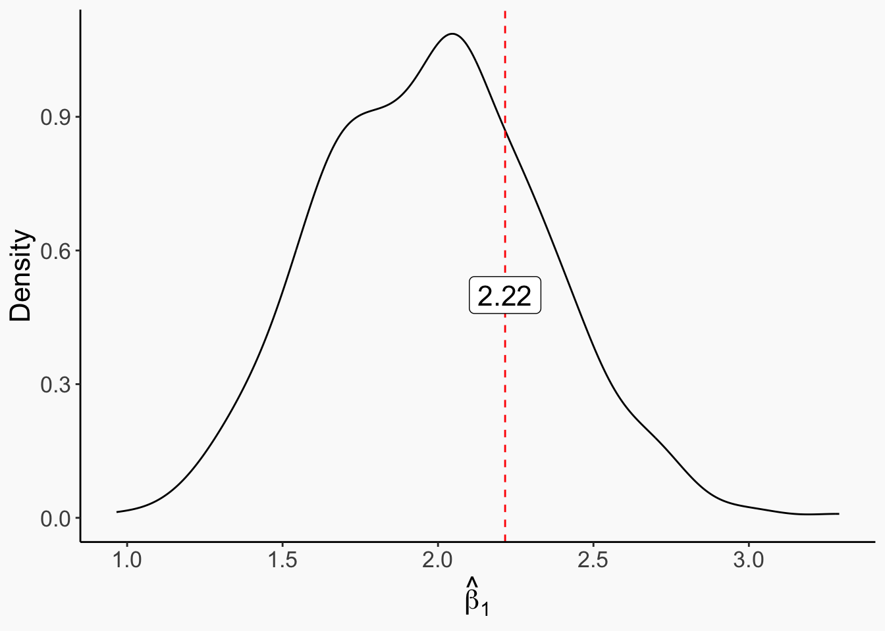
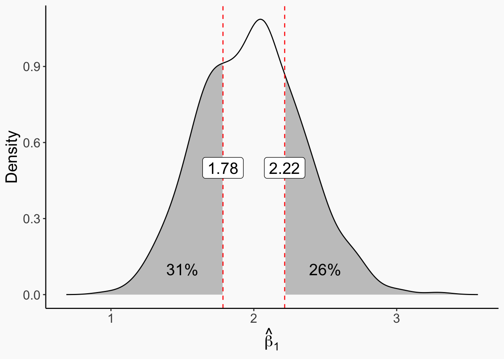
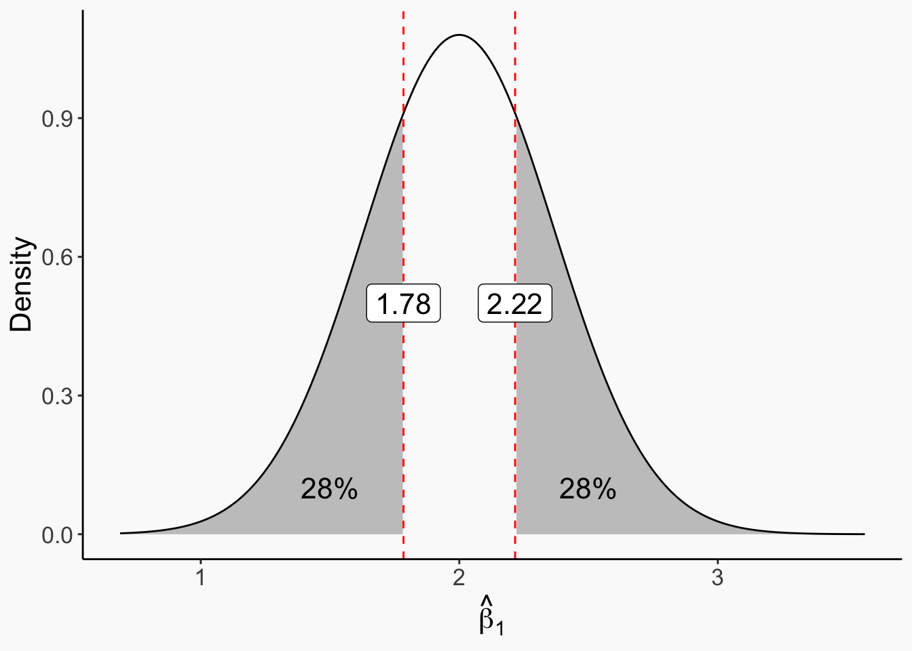
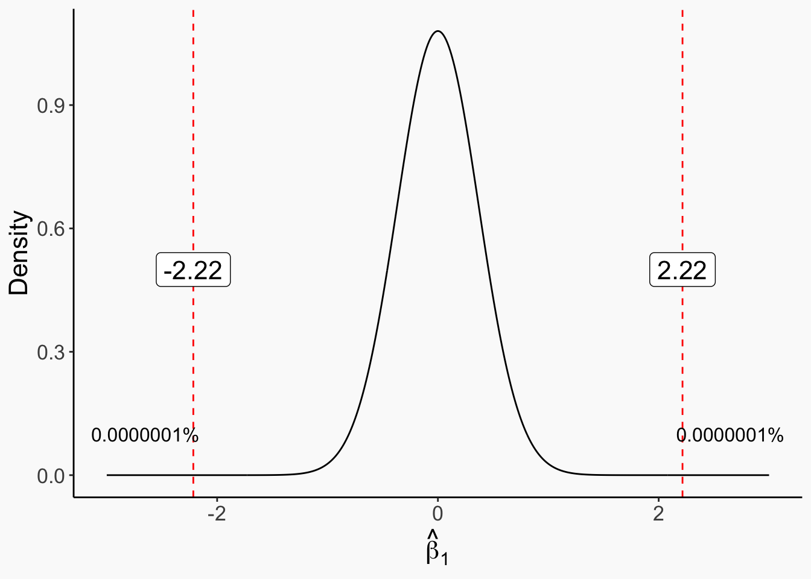
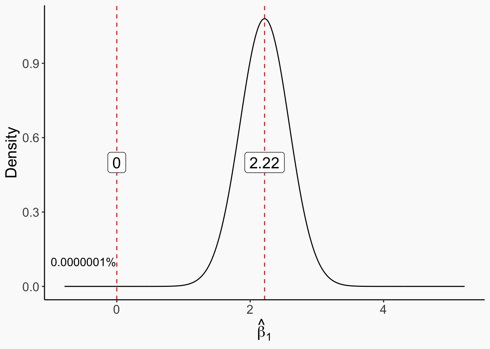

Our goal as econometricians is to uncover the true data generating process
Unfortunately, that’s impossible
Unlike in, say, pure mathematics, we will never know the truth. No matter how far we walk, it will always be on the horizon
All we can hope to do is move a little bit closer
Truth and Reality
Today we’ll be covering hypothesis testing, which is one approach to using reality to get closer to the truth
It works by subtraction
We test whether certain versions of the truth are likely or unlikely
And if we find that they’re unlikely, we can reject that version of the truth, narrowing down what the actual possibilities are and getting closer and closer to the actual truth
Truth and Reality
When we’re talking about the truth here, we’re referring to the true data generating process (DGP)
where \(cor(AdultHeight_i,\varepsilon_i) = 0\), then…
Person \(i\)’s wage is truly determined by a linear function of your height, plus an unrelated error term \(\varepsilon_i\)
Why might someone have a high wage? Either they’re tall, or they have a high error term, or both. No other way!
Truth and Reality
Our ability to estimate that true model depends on our ability to avoid inference and identification error
If we assume that’s the true DGP, there’s no endogeneity, and the relationship between \(Wage\) and \(AdultHeight\) is a straight line, so regular ’ol OLS of \(Wage\) on \(AdultHeight\) will not give us identification error
But we also need to be careful about inference error
When we run that regression, what does our \(\hat{\beta}_1\) say about the true value \(\beta_1\)?
Terminology
Remember:
Greek letters like \(\beta_1\) are the truth. They are part of the true DGP
Modified Greek letters like \(\hat{\beta_1}\) are our estimate. They are what we think the truth is based on our data
English (Latin) letters like \(X\) are actual data from our sample
Modified English letters like \(\bar{X}\) are calculations from our sample. They’re what we do with our data (we can also just write out the calculation; \(\bar{X}=(1/N)\sum_iX_i\))
We can say that our estimate of the truth is that calculation, e.g. \(\hat{\mu} = \bar{X}\)
\[ Data \rightarrow Calculation \rightarrow Estimate \xrightarrow[]{Hopefully!} Truth \]
\[ X, Y \rightarrow \frac{\sum_iX_iY_i}{\sum_iX_i^2} \rightarrow \hat{\beta_1} \xrightarrow[]{Hopefully!} \beta_1 \]
Hypothesis Testing
\[ Data \rightarrow Calculation \rightarrow Estimate \xrightarrow[]{Hopefully!} Truth \]
We want to be able to take our \(Data\) and learn something about the \(Truth\)
We acknowledge that there is lots of random variation in the \(Data\), which means lots of random variation in the \(Calculation\), which means that our \(Estimate\) will vary from sample to sample even though the \(Truth\) won’t!
Hypothesis testing uses that sampling variation to try to eliminate false versions of the truth
Sampling Variation
We talked last time about *sampling variation in an estimate
This of course comes because data varies from sample to sample, and \(Data \rightarrow Calculation \rightarrow Estimate\).
In this data, the true \(\beta_1\) is 2: \(Y_i = 3 +2X_i + \varepsilon_i\)
set.seed(1234)bigsamp <-1:500%>%map(function(x) tibble(X =runif(100)) %>%mutate(Y =3+2*X +rnorm(100)) %>%lm(Y~X, data = .) %>%coef() %>%`[`(2)) %>%unlist() %>%data.frame()ggplot(bigsamp, aes(x = .)) +geom_density() +theme_metro_regtitle() +geom_vline(aes(xintercept =2), linetype ='dashed', color ='red') +annotate(geom='label', x =2, y = .5, label ='True Value', size =16/.pt) +labs(x =expression(hat(beta)[1]),y ='Density')

Sampling Variation
Notice that there is plenty of variation around the true value of \(2\)
Now let’s imagine we don’t know that and are trying to answer the question “is the truth \(\beta_1 = 2\)?”
We don’t have the full sampling distribution, we just have a single estimate:
All we see is \(\hat{\beta}_1 =\) 2.22. So… is \(\beta_1 = 2\)?
model <-lm(Y~X, data = tib)
Null and Alternative Hypotheses
The null hypothesis is the version of the truth we’re testing to see whether we can prove it’s wrong
The alternative hypothesis is, well, every version of the truth that’s not the null hypothesis
Here, if we’re trying to check whether \(\beta_1 = 2\), then \(\beta_1 = 2\) is our null hypothesis
And \(\beta_1 \neq 2\) is our alternative hypothesis
I bring this up here because in order to do a hypothesis test, we need to think about the sampling distribution under the null
Null Distribution
The “null distribution” is what the sampling distribution of the estimator would be if our null distribution were true
We can see that in the sampling distribution we have!
\(\beta_1 = 2\)is true, and here’s what the sampling distribution looks like! (although it would be smoother with more samples)
ggplot(bigsamp, aes(x = .)) +geom_density() +theme_metro_regtitle() +geom_vline(aes(xintercept =2), linetype ='dashed', color ='red') +annotate(geom='label', x =2, y = .5, label ='True Value', size =16/.pt) +labs(x =expression(hat(beta)[1]),y ='Density')
Null Distribution
So the key question that a hypothesis test asks is: given this null distribution, how unlikely is it that we get the result we get?
If it’s super unlikely that the null is true and we get our result, well…
We definitely got our result…
So the null must be the part that’s wrong!
That’s when we reject the null - we find that the sampling distribution under the null hardly ever produces a result like ours, so that’s probably the wrong sampling distribution and thus the wrong null!
Null Distribution
How does this work out with our estimate of 2.22?
Let’s stick it on the graph
ggplot(bigsamp, aes(x = .)) +geom_density() +theme_metro_regtitle() +geom_vline(aes(xintercept =coef(model)[2]), linetype ='dashed', color ='red') +annotate(geom='label', x =coef(model)[2], y = .5, label =number(coef(model)[2],accuracy = .01), size =16/.pt) +labs(x =expression(hat(beta)[1]),y ='Density')

Hypothesis Test
Our test comes down to: how weird would it be to get a result this far from the “truth” or farther?
We can figure this out by shading in the parts of the null distribution this far from the null truth or farther
So we shade 2.22 and above, and also 2 - abs(2.22 - 2) = 1.78 and below.
dens <-density(bigsamp$.)densdat <-data.frame(x = dens$x, y = dens$y)ggplot(densdat, aes(x=x, y = y)) +geom_line() +theme_metro_regtitle() +geom_ribbon(data = densdat %>%filter(x <2-abs(coef(model)[2]-2)),aes(x = x, ymin =0, ymax = y), alpha = .3) +geom_ribbon(data = densdat %>%filter(x >coef(model)[2]),aes(x = x, ymin =0, ymax = y), alpha = .3) +geom_vline(aes(xintercept =coef(model)[2]), linetype ='dashed', color ='red') +annotate(geom='label', x =coef(model)[2], y = .5, label =number(coef(model)[2],accuracy = .01), size =16/.pt) +geom_vline(aes(xintercept =2-abs(coef(model)[2]-2)), linetype ='dashed', color ='red') +annotate(geom='label', x =2-abs(coef(model)[2]-2), y = .5, label =number(2-abs(coef(model)[2]-2),accuracy = .01), size =16/.pt) +labs(x =expression(hat(beta)[1]),y ='Density') +annotate(geom ='text', x =1.5, y = .1, label =percent(mean(bigsamp$. <=2-abs(coef(model)[2]-2))), size =16/.pt) +annotate(geom ='text', x =2.5, y = .1, label =percent(mean(bigsamp$. >=coef(model)[2])), size =16/.pt)

Hypothesis Test
Based off of this sampling distribution, there’s a 31% + 26% = 57% chance of getting something as weird as we got or weirder (or for a one-tailed test, a 26% chance of getting something that high or higher) if the null of \(\beta_1 = 2\) is true
That’s not too unlikely! So, we would fail to reject the null of \(\beta_1 = 2\)
This doesn’t mean that we conclude that \(\beta_1 = 2\)is true, it just means we can’t rule it out
ggplot(densdat, aes(x=x, y = y)) +geom_line() +theme_metro_regtitle() +geom_ribbon(data = densdat %>%filter(x <2-abs(coef(model)[2]-2)),aes(x = x, ymin =0, ymax = y), alpha = .3) +geom_ribbon(data = densdat %>%filter(x >coef(model)[2]),aes(x = x, ymin =0, ymax = y), alpha = .3) +geom_vline(aes(xintercept =coef(model)[2]), linetype ='dashed', color ='red') +annotate(geom='label', x =coef(model)[2], y = .5, label =number(coef(model)[2],accuracy = .01), size =16/.pt) +geom_vline(aes(xintercept =2-abs(coef(model)[2]-2)), linetype ='dashed', color ='red') +annotate(geom='label', x =2-abs(coef(model)[2]-2), y = .5, label =number(2-abs(coef(model)[2]-2),accuracy = .01), size =16/.pt) +labs(x =expression(hat(beta)[1]),y ='Density') +annotate(geom ='text', x =1.5, y = .1, label =percent(mean(bigsamp$. <=2-abs(coef(model)[2]-2))), size =16/.pt) +annotate(geom ='text', x =2.5, y = .1, label =percent(mean(bigsamp$. >=coef(model)[2])), size =16/.pt)
The Null Distribution
Of course, we generated this null distribution by just randomly creating a few random samples
We also happen to know that if we had infinite samples, the sampling distribution of OLS would be a normal distribution with the mean at the true value and the standard deviation determined by \(var(X)\), the variance of the residual, and the sample size. The real null distribution looks like this:
n <-summary(model)densdat$y <-dnorm(densdat$x, 2, as.data.frame(n$coefficients)[,2][2])ggplot(densdat, aes(x=x, y = y)) +geom_line() +theme_metro_regtitle() +geom_ribbon(data = densdat %>%filter(x <2-abs(coef(model)[2]-2)),aes(x = x, ymin =0, ymax = y), alpha = .3) +geom_ribbon(data = densdat %>%filter(x >coef(model)[2]),aes(x = x, ymin =0, ymax = y), alpha = .3) +geom_vline(aes(xintercept =coef(model)[2]), linetype ='dashed', color ='red') +annotate(geom='label', x =coef(model)[2], y = .5, label =number(coef(model)[2],accuracy = .01), size =16/.pt) +geom_vline(aes(xintercept =2-abs(coef(model)[2]-2)), linetype ='dashed', color ='red') +annotate(geom='label', x =2-abs(coef(model)[2]-2), y = .5, label =number(2-abs(coef(model)[2]-2),accuracy = .01), size =16/.pt) +labs(x =expression(hat(beta)[1]),y ='Density') +annotate(geom ='text', x =1.5, y = .1, label =percent(pnorm(2-abs(coef(model)[2]-2),2,as.data.frame(n$coefficients)[,2][2])), size =16/.pt) +annotate(geom ='text', x =2.5, y = .1, label =percent(1-pnorm(coef(model)[2],2,as.data.frame(n$coefficients)[,2][2])), size =16/.pt)

The Null Distribution
So with the estimate we made from the sample we got (2.22), we can’t reject a null \(\beta_1 = 2\)
Which is good!! That’s the truth. We don’t want to reject it!
How about other nulls? Can we reject those?
Can we reject a null that \(\beta_1 = 0\)?
(by default, most null hypotheses are that the parameter is 0)
Let’s follow the same steps!
The Null Distribution
Now that’s unlikely. We can reject that the true value is 0.
densdat2 <-data.frame(x =-300:300/100, y =dnorm(-300:300/100, 0, as.data.frame(n$coefficients)[,2][2]))ggplot(densdat2, aes(x=x, y = y)) +geom_line() +theme_metro_regtitle() +geom_vline(aes(xintercept =coef(model)[2]), linetype ='dashed', color ='red') +annotate(geom='label', x =coef(model)[2], y = .5, label =number(coef(model)[2],accuracy = .01), size =16/.pt) +geom_vline(aes(xintercept =-abs(coef(model)[2])), linetype ='dashed', color ='red') +annotate(geom='label', x =-abs(coef(model)[2]), y = .5, label =number(-abs(coef(model)[2]),accuracy = .01), size =16/.pt) +labs(x =expression(hat(beta)[1]),y ='Density') +annotate(geom ='text', x =-2.65, y = .1, label =percent(pnorm(0-abs(coef(model)[2]),0,as.data.frame(n$coefficients)[,2][2]),accuracy = .0000001), size =12/.pt) +annotate(geom ='text', x =2.65, y = .1, label =percent(1-pnorm(coef(model)[2],0,as.data.frame(n$coefficients)[,2][2]), accuracy = .0000001), size =12/.pt)

Concept Checks
What is a null distribution?
Why would we want to look at whether our estimate is unlikely given the null? What does this get us?
How is it possible to use the sampling distribution of the null when we only have one sample?
p-values
Ok, so when is it weird enough to reject the null?
A p-value is the probability of getting a result as-weird-as-we-actually-got or weirder under the assumption that the null is true
So in the below graph, the p-value is .56 or 56%
ggplot(densdat, aes(x=x, y = y)) +geom_line() +theme_metro_regtitle() +geom_ribbon(data = densdat %>%filter(x <2-abs(coef(model)[2]-2)),aes(x = x, ymin =0, ymax = y), alpha = .3) +geom_ribbon(data = densdat %>%filter(x >coef(model)[2]),aes(x = x, ymin =0, ymax = y), alpha = .3) +geom_vline(aes(xintercept =coef(model)[2]), linetype ='dashed', color ='red') +annotate(geom='label', x =coef(model)[2], y = .5, label =number(coef(model)[2],accuracy = .01), size =16/.pt) +geom_vline(aes(xintercept =2-abs(coef(model)[2]-2)), linetype ='dashed', color ='red') +annotate(geom='label', x =2-abs(coef(model)[2]-2), y = .5, label =number(2-abs(coef(model)[2]-2),accuracy = .01), size =16/.pt) +labs(x =expression(hat(beta)[1]),y ='Density') +annotate(geom ='text', x =1.5, y = .1, label =percent(pnorm(2-abs(coef(model)[2]-2),2,as.data.frame(n$coefficients)[,2][2])), size =16/.pt) +annotate(geom ='text', x =2.5, y = .1, label =percent(1-pnorm(coef(model)[2],2,as.data.frame(n$coefficients)[,2][2])), size =16/.pt)
p-values
The lower the p-value, the less likely it is that we got our result AND the null is true
And since we definitely got our result, a really low p-value says we should reject the null
How low does it need to be to reject the null?
Well…
p-values and .05
It’s common practice to decide on a confidence level and a corresponding \(\alpha\), most commonly a 95% confidence level \(\rightarrow \alpha = .05\), and reject the null if the p-value is lower than \(\alpha\)
Why 95%? Completely arbitrary. Someone picked it out of thin air a hundred years ago as a just-for-instance and we still use it 🤷
Having a hard-and-fast threshold like this is not a great idea ( \(p=.04\) is rejection, but \(p=.06\) is not?), but it’s a very hard habit to break
Key takeaway: get familiar with the concept of rejecting the null when the p-value is lower than .05, because you’ll see it
BUT don’t get too hung up on black-and-white rejection in general
Power
When we pick an \(\alpha\), like .05 or .1 or .01 or whatever, we’re saying “I’m comfortable rejecting the null 5% (or 1%, etc.) of the time even when it’s true”
Since 5% of the time, you’ll get a p-value below .05 even if the null is true, because of sampling variation
This is a “false positive”
Why not just pick a super low confidence level so we don’t have false positives?
Power
Because the smaller we make our confidence level, the less likely we are to reject the null in general
Which means we’ll also fail to reject it if it’s actually false (a “false negative”)
We want a low false-positive rate, but also a low false-negative rate
The false negative rate is called “power.” If we will reject the null 80% of the time when it’s actually false, we have 80% power
As \(\alpha\) shrinks, false-positive rates decline, but false-negative rates increase
Strike a balance!
(minor sidenote: “false positive” and “false negative” are sometimes referred to as “Type I Error” and “Type II Error” - these are not great terms because they are hard to remember! If you encounter them, just remember that in “The boy who cried wolf” the townspeople think there’s a wolf when there’s not, then think there’s not a wolf when there is, committing Type I and II error in that order)
Concept Checks
Say we run an two-sided test on the parameter \(\beta_0\) with a null hypothesis that \(\beta_0 = 3\) and get an estimate of \(\hat{\beta}_0 = 3.5\) and a p-value of \(.07\). Complete the sentence: “There is a 7% chance that…”
If someone said a study was “underpowered,” what might you guess they mean by that?
If you have chosen a confidence level of 95% and you get a p-value of \(p = .06\), do you reject the null or not?
Describing Uncertainty
Let’s come at this from a different angle, shall we?
The real purpose of all of this is to avoid inferential error. That doesn’t necessarily mean we need an up-or-down rejection of a null hypothesis
Why don’t we just describe the variation in the estimator without necessarily making a judgement about a null hypothesis?
Instead of centering around a null hypothesis, these will focus on the estimate we have and think about the sampling variation around that estimate
Standard Errors and Confidence Intervals
One way we can describe sampling variation is to think about the standard errors
The standard error of an estimate is the standard deviation of that estimate’s sampling distribution
Since the sampling distribution is often normal, the mean of that distribution (our estimate) and the standard error are enough to describe what the sampling distribution looks like
This is why standard errors are often shown on regression tables!
What we just did…
This is how we thought of it - we picked a null, figured out the null distribution (the sampling distribution of the estimator assuming the null was true), and checked if our estimate was unlikely enough that we could reject the null
densdat2 <-data.frame(x =-300:300/100, y =dnorm(-300:300/100, 0, as.data.frame(n$coefficients)[,2][2]))ggplot(densdat2, aes(x=x, y = y)) +geom_line() +theme_metro_regtitle() +geom_vline(aes(xintercept =coef(model)[2]), linetype ='dashed', color ='red') +annotate(geom='label', x =coef(model)[2], y = .5, label =number(coef(model)[2],accuracy = .01), size =16/.pt) +geom_vline(aes(xintercept =-abs(coef(model)[2])), linetype ='dashed', color ='red') +annotate(geom='label', x =-abs(coef(model)[2]), y = .5, label =number(-abs(coef(model)[2]),accuracy = .01), size =16/.pt) +labs(x =expression(hat(beta)[1]),y ='Density') +annotate(geom ='text', x =-2.65, y = .1, label =percent(pnorm(0-abs(coef(model)[2]),0,as.data.frame(n$coefficients)[,2][2]),accuracy = .0000001), size =12/.pt) +annotate(geom ='text', x =2.65, y = .1, label =percent(1-pnorm(coef(model)[2],0,as.data.frame(n$coefficients)[,2][2]), accuracy = .0000001), size =12/.pt)
Instead…
By thinking about standard errors, we instead center the sampling distribution around our estimate. If the null is far away, we reject that null (result should be the same)!
densdat2 <-data.frame(x =(-300:300/100+coef(model)[2]), y =dnorm(-300:300/100+coef(model)[2], coef(model)[2], as.data.frame(n$coefficients)[,2][2]))ggplot(densdat2, aes(x=x, y = y)) +geom_line() +theme_metro_regtitle() +geom_vline(aes(xintercept =coef(model)[2]), linetype ='dashed', color ='red') +annotate(geom='label', x =coef(model)[2], y = .5, label =number(coef(model)[2],accuracy = .01), size =16/.pt) +geom_vline(aes(xintercept =0), linetype ='dashed', color ='red') +annotate(geom='label', x =0, y = .5, label =0, size =16/.pt) +labs(x =expression(hat(beta)[1]),y ='Density') +annotate(geom ='text', x =-.5, y = .1, label =percent(pnorm(0-abs(coef(model)[2]),0,as.data.frame(n$coefficients)[,2][2]),accuracy = .0000001), size =12/.pt)

Confidence Intervals
So what we’re thinking now is not “is our estimate close to the null?” but rather “is that null close to our estimate?”
We can go one step further and ask “which nulls are close to our estimate?” and figure out which nulls we can think about rejecting from there
A confidence interval shows the range of nulls that would not be rejected by our estimate
Everything outside that range can be rejected
Confidence Intervals
This takes the form of
\[ \hat{\beta}_1 \pm Z(s.e.) \]
Where \(Z\) is some value from our distribution that gives us the \(1-\alpha\) percentile (for a 95% confidence interval with a normal sampling distribution, \(Z = 1.96\))
and \(s.e.\) is the standard error of \(\hat{\beta}_1\)